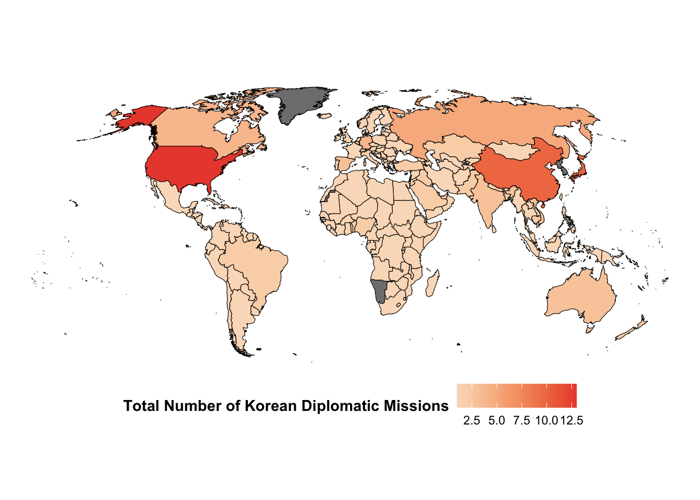

This is a simple blog post with visualization of Korean diplomatic missions abroad. I will (hopefully) add more details later.
The data is from Korean Ministry of Foreign Affairs as of 31 December 2020.
The first map is created with Google Map’s API and the googleway package.Grouped by Country
